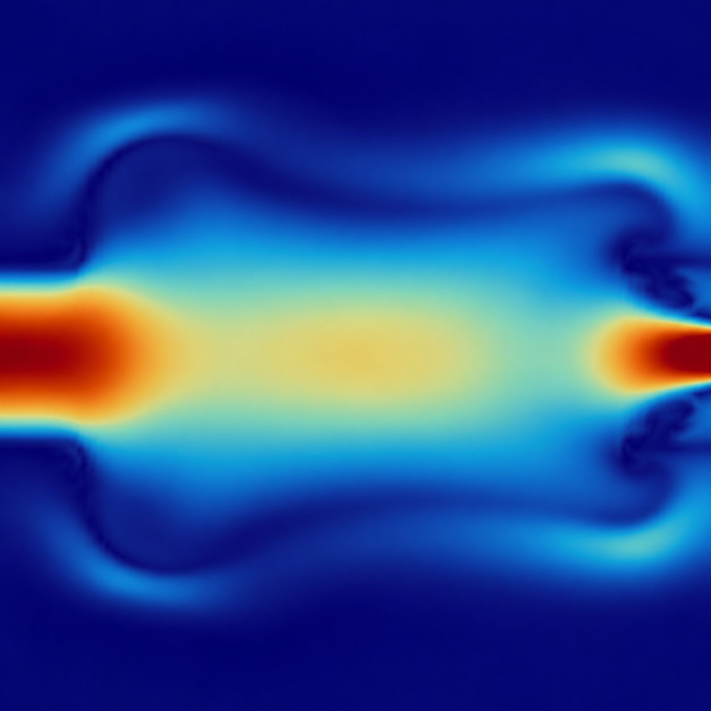
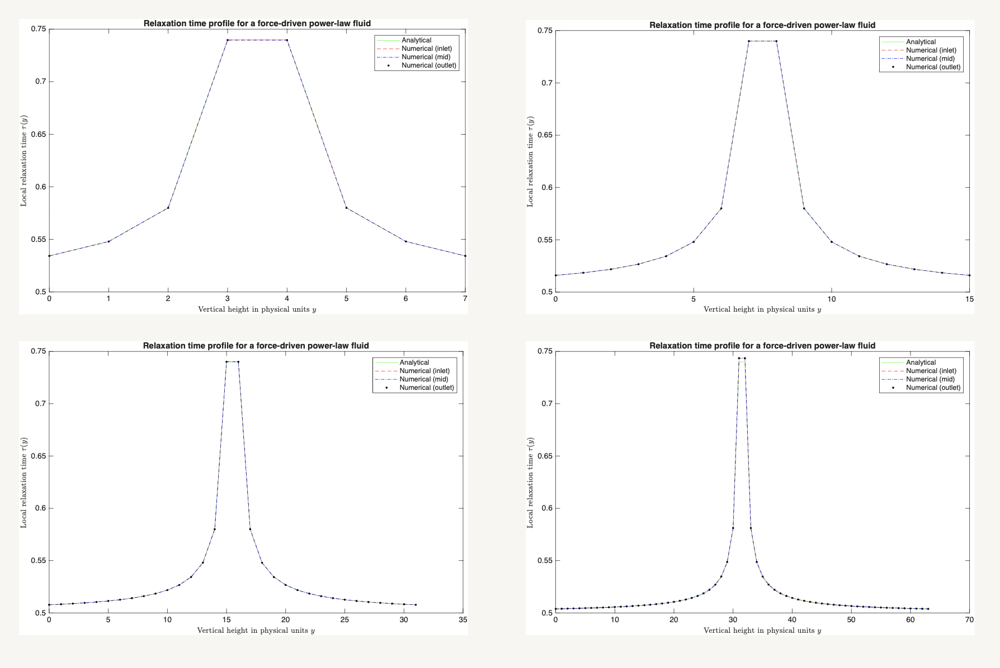
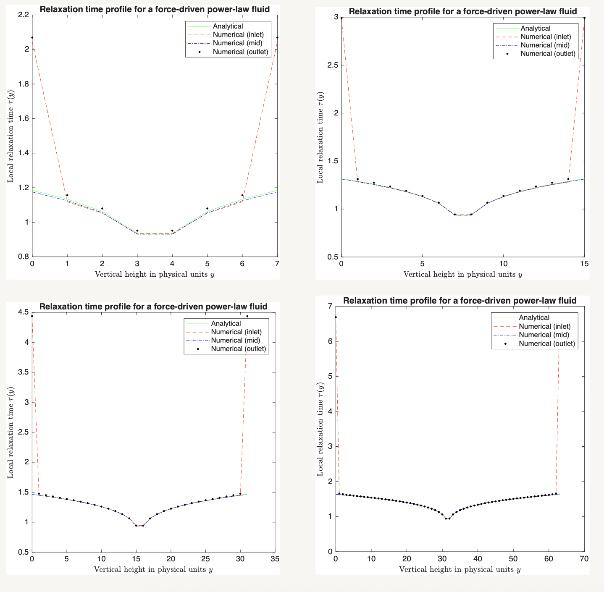
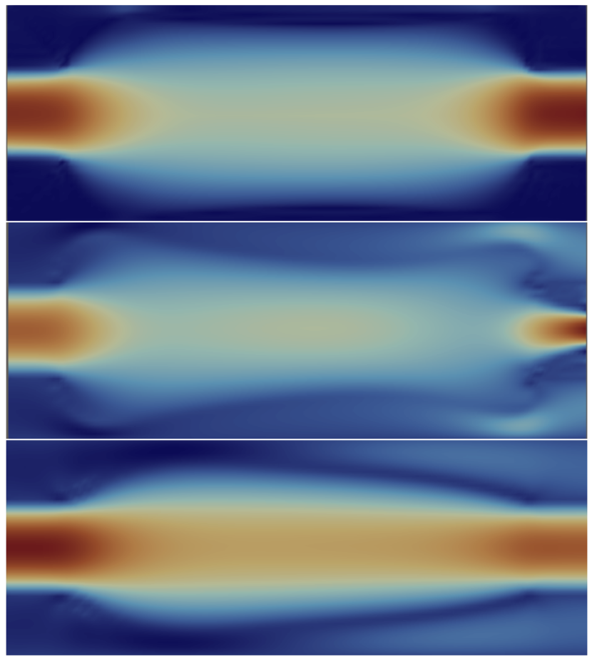

6th July 2026 - 30th August 2026
Non-Newtonian Rheology in an Elastic Vessel

What is this page? This is a week-by-week overview of my research project on Non-Newtonian Rheology in an Elastic Vessel, supervised by Dr Marianna Pepona, along with all the materials, notes and details made along the way.
What is this colourful image? What you are seeing is the end result of this project: a velocity profile of a shear-thinning fluid in an elastic vessel, simulated using the Lattice Boltzmann Method (LBM) in C++.
Week 1
Reading, reading and more reading
As advertised I read a lot, specifically the following:
A few chapters from the Advanced Mathematical Biology IV module notes, my notes are here.
§2 of Anand and Christov's article "Revisiting steady viscous flow of a generalized Newtonian fluid through a slender elastic tube using shell theory", my notes are here.
Parts of §1 and §3 from The Lattice Boltzmann Method: Principles and Practice textbook, my notes are here.
Week 2
More LBM and the C++ program
Worked through §2 of Gabbanelli, Drazer and Koplik's Lattice Boltzmann method for non-Newtonian (power-law) fluids, my notes are here.
Worked through §2.1, §2.4, §3.1-3.1.1 and §3.2-3.2.3 from Dzanic, Huang and Sauret's Lattice Boltzmann methods for simulating non-Newtonian fluids: A comprehensive review, my notes are here.
Worked through understanding the initial program, my notes are here.
Week 3
Implementation of the power-law model for a force-driven flow
Derived the analytical solution for the power-law model in a force-driven flow, derivation is here, and implemented this in the C++ program.

Week 4
Mesh Convergence Study for the power-law model in a force-driven flow
Conducted a mesh convergence study for the power-law model in a force-driven flow, showing second-order convergence which can be found here.
Week 5
Implementation of the power-law model for a velocity-driven flow
Very similar to the force-driven flow. Derived the analytical solution for the power-law model in a velocity-driven flow, derivation is here, and implemented this in the C++ program.

Week 6
Mesh Convergence Study for the power-law model in a velocity-driven flow
Again, very similar to the force-driven flow. Conducted a mesh convergence study for the power-law model in a velocity-driven flow, showing second-order convergence which can be found here.

Week 7
Extension to a flexible vessel
After confirming that the power-law model in a velocity driven flow indeed gave the appropriate second order convergence, turned on the flexible vessels and ran simulations testing shear-thinning, Newtonian and shear-thickening fluids.
Week 8
Final write up and report
Completed a full write-up outlining the project from a non-technical perspective. You can find the report here.